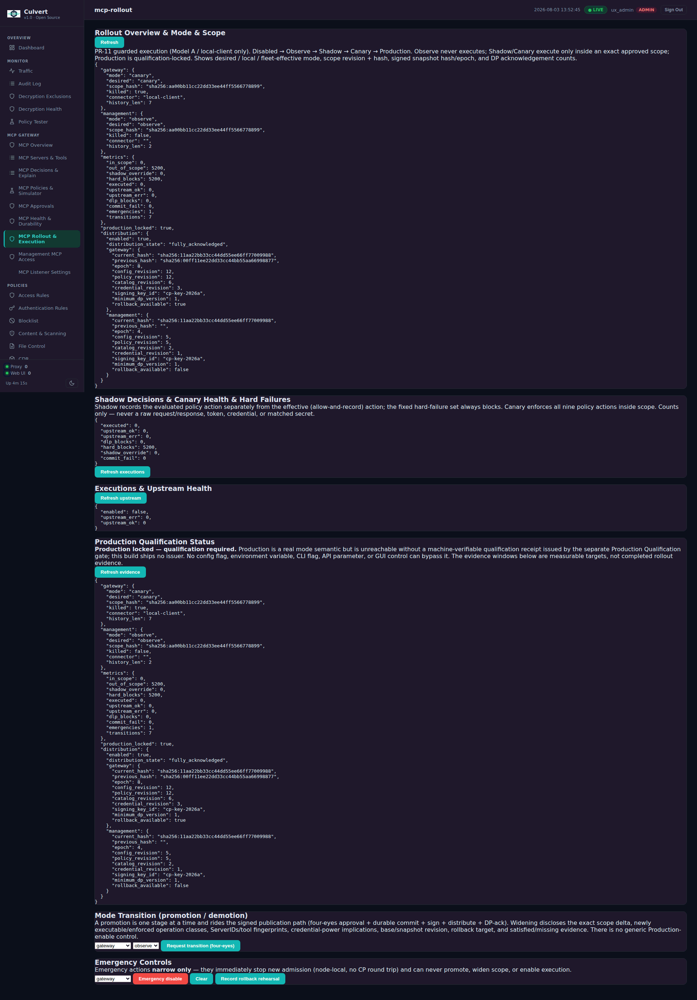
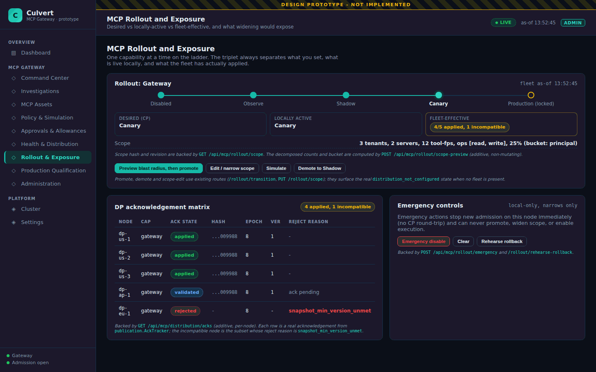

Design prototype - not implemented · current-vs-proposed comparison
MCP Rollout JSON → Rollout & Exposure
Rollout mode, scope, fleet acknowledgement and emergency controls. Today: six stacked JSON panels, kill-switch buried as killed:true. Proposed: a mode ladder, state triplet, DP matrix and framed emergency controls.
CurrentMCP Rollout (raw JSON ×6)

ProposedRollout & Exposuredesign prototype

The proposed screen separates desired / locally-active / fleet-effective as a triplet, names the one incompatible DP in an acknowledgement matrix, and puts the blast-radius preview in front of promotion. Emergency controls are framed as local-only and reversible.